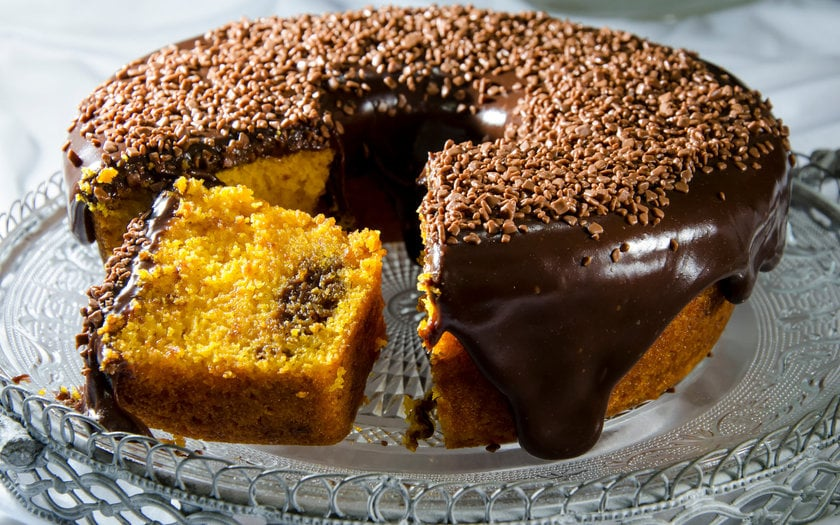

Bolo de Cenoura com Cobertura de Chocolate
Uma receita simples, fácil, rápida e deliciosa! Veja abaixo o passo a passo dessa delícia!

Tempo de Preparo: 40 minutos
Serve: 8 porções
INGREDIENTES
- 3 cenouras médias
- 3 xícaras de açucar
- 1/2 xícara de óleo
- 4 ovos
- 2 e 1/2 xícaras de farinha de trigo
- 1 colher de fermento
- 1 colher de manteiga
- 1 xícara de leite
- 3 colheres de chocolate em pó
MODO DE PREPARO
- Em um liquidificador, adicione a cenoura, os ovos e o óleo, depois misture.
- Acrescente o açúcar e bata novamente por 5 minutos.
- Em uma tigela ou na batedeira, adicione a farinha de trigo e depois misture novamente.
- Acrescente o fermento e misture lentamente com uma colher
- Asse em um forno preaquecido a 180° C por aproximadamente 40 minutos.
- Despeje em uma tigela a manteiga, o chocolate em pó, o açúcar e o leite, depois misture.
- Leve a mistura ao fogo e continue misturando até obter uma consistência cremosa, depois despeje a calda por cima do bolo.
AGORA É SÓ APROVEITAR! BOM APETITE!